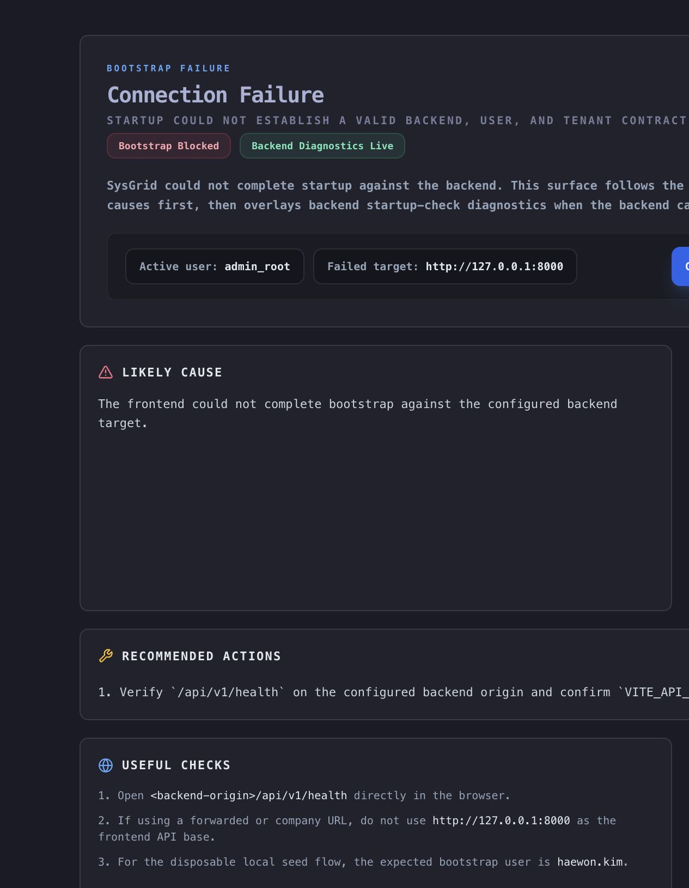
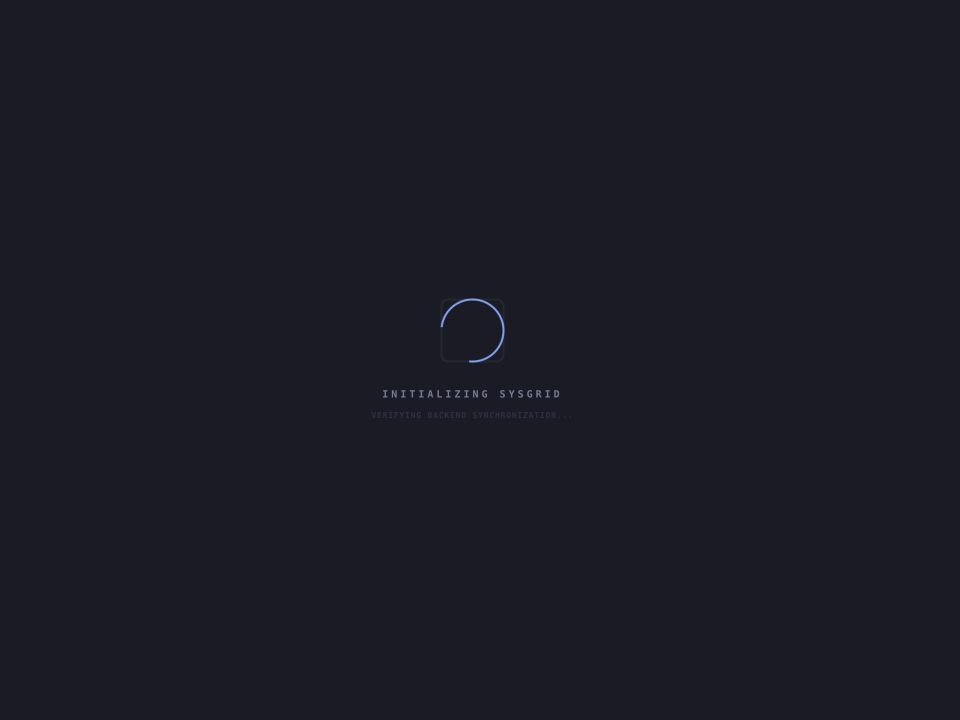

Result: FAIL
The implementation changed the asset workspace toward the shared golden grid contract, but the live route never rendered the actual workspace. The frontend stopped on the bootstrap failure surface at /asset.
Blocking live diagnosis: active user admin_root; local seed hint expects haewon.kim.
Route: /asset · Screenshot: 1265x1630 · Document: 1265x1630

Route: /asset · Viewport: 960x720 · Screenshot: 960x720

The grid ownership moved from a page-local custom column block into frontend/src/components/assets/assetGoldenColumns.tsx using buildOperationalGridColumnDefinitions(). Command controls were also rebalanced so view toggles live with the golden command grammar and the lens filter moved into the secondary toolbar.